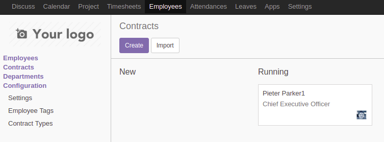
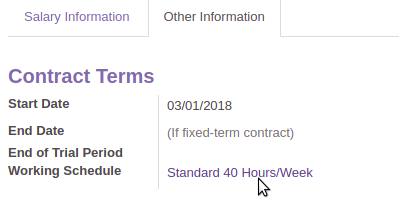
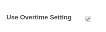
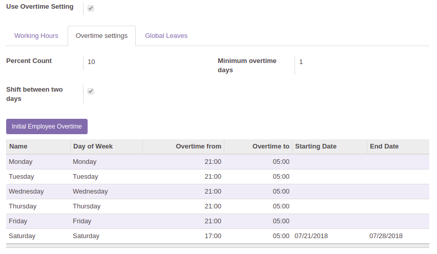
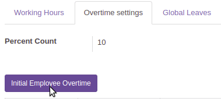

How to configure overtime settings
To allow employees use overtime settings in system you'd need to:
- create contract for employees;
- set up contract working schedule.
Set up contract working schedule
Follow below steps to set up contract working schedule.
- Open Odoo's Employees page and switch to the Contracts tab. 
- Select contract and go to Other information tab -> press on Working Schedule value. 
- Check Use Overtime Setting button. 
- Go to Overtime settings tab and set up overtime configurations. 
- Press Initial Employee Overtime button to calculate employees' overtime. 
- Press Save button to save overtime configurations.